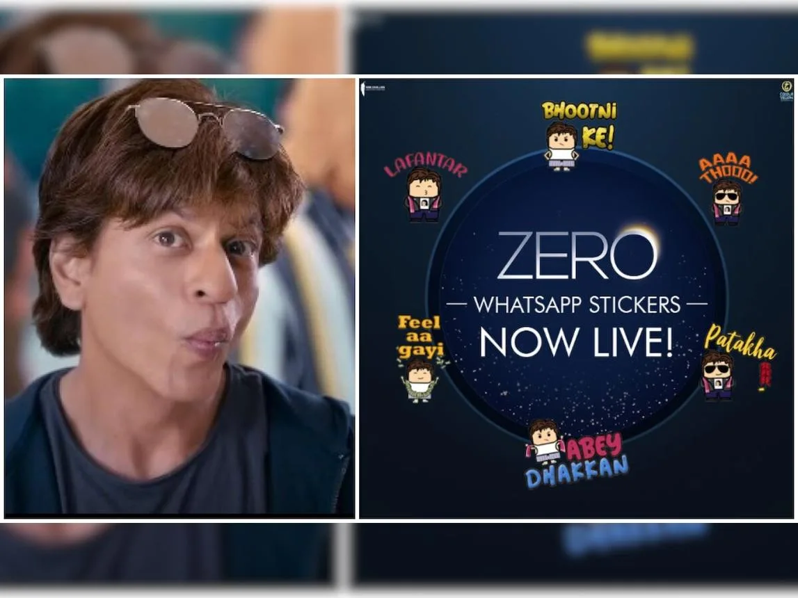
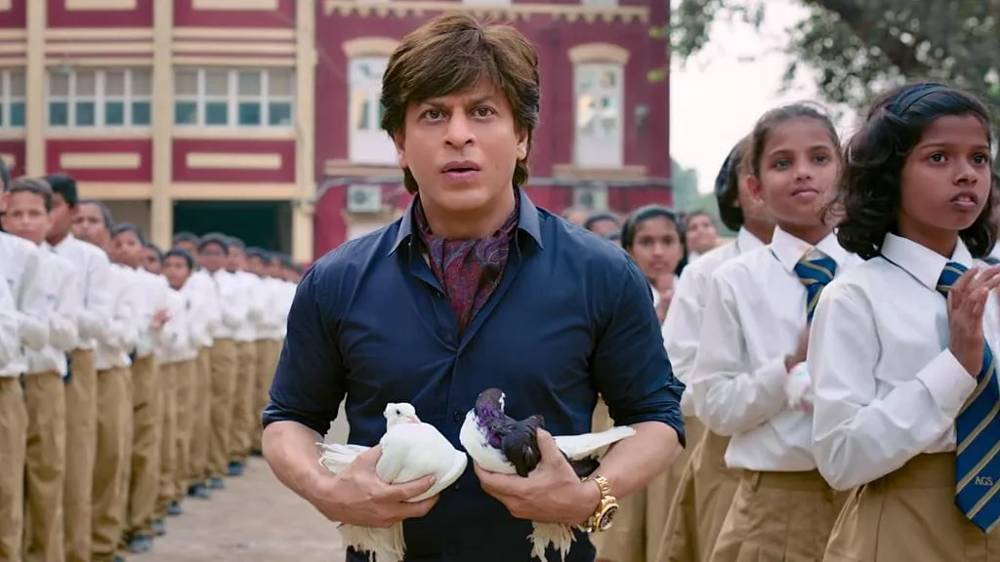

Part III · The Years of the Apparent Lull, 2014 to 2018 · 18 of 57
Chapter 16 · What the Technology Was Doing
The most revealing comparison is not film against film. It is the change in what the technology was asked to do. (Analysis)

Zero (2018): the first Bollywood film with its own WhatsApp stickers. (Image: Final Thesis archive)
The campaigns of these years fall into three phases. From 2011 to 2013 (Ra.One, Don 2, Chennai Express) the digital layer was a product in its own right: a game, a character, a service, something to do and not only something to watch. From 2014 to 2016 (Happy New Year, Dilwale, Fan, Dear Zindagi) the campaigns were built around single assets and partnerships: a tour, an anthem, an app tie-in. From 2017 to 2018 (Jab Harry Met Sejal, Zero) they used the new powers of the platforms themselves: serial short videos, camera lenses, stickers, character accounts, a voice assistant, rewards. (Analysis, on the campaigns documented in Chapters 10, 12 and 14)
| The Ra.One and Chennai Express model | The common pattern after 2013 | |
|---|---|---|
| What the technology does | Creates a new experience to take part in | Distributes, personalises or amplifies promotional content |
| The fan’s role | Player, contributor, sometimes the driver of the campaign | Viewer, sharer, follower, contest entrant |
| How long it lasts | Games and characters can outlive the release | Tied to the release window or to one platform’s feature |
| Data | Analytics recalibrate the campaign every day | Engagement and sharing are reported; a comparable daily feedback loop is not documented |
| Commerce | Merchandise, licensing, games and brands reinforce one another | Brand tie-ins documented film by film |
(Analysis; the left column rests on the Chennai Express case study and the Ra.One record, the right on the public campaign record of 2014 to 2018)
This is the most defensible form of the observation at the centre of this Part: a shift from building technology-led entertainment around a film to using digital channels to promote one. It also explains how a campaign can be commercially successful and visible online without matching the architecture of Chennai Express. (Analysis)
The question nobody outside the room can answer. Why did the man who wrote the playbook stop reading from it? Was it fatigue, a strategy, or something nobody outside the room could see? Who was running the campaigns now, and did they know what they were holding? (The author’s questions) Three different things have to be asked, and they have three different answers. (Method note)
| Question | What the evidence shows |
|---|---|
| Did Khan personally back the technology-led approach of 2011 to 2013? | Documented. The Chennai Express case study credits his “visionary ideas” and records his words on the game, the karaoke app and technology as a way to reach his audience; the Ra.One record shows him on stage with Google and in live chats with fans. |
| Did the publicly visible marketing change after 2013? | Supported, with exceptions. The shape changed; the innovation did not stop. Zero is the clearest exception. |
| Did he lose interest, or did others carry on without his direction? | Not established. Public campaigns cannot show this. Internal briefs, approvals, budgets and interviews with the teams would be needed. |
(Fact for the first row: Case study, pp. 1, 6, 13; Chapter 10. The second and third rows are Analysis.)
From the Final Thesis
Added from the Final Thesis, word for word. Where a figure here differs from the sourced figure earlier in this chapter, the chapter’s figure stands; see Addendum B.
Phase II — 2014–2016
There are still creative exceptions: Happy New Year’s game, Fan’s unusually rich fan-character premise, and Dear Zindagi’s Tinder collaboration. However, the campaigns are increasingly organised around specific promotional assets, partnerships, and content formats rather than a unified digital ecosystem.
This is a change in the shape of innovation—not evidence that no creative or technical work occurred.
(Final Thesis, section 7)
Phase III — 2017–2018
The campaigns use the emerging capabilities of social platforms: serial short-form content, camera effects, messaging stickers, character accounts, voice interfaces, augmented reality, and rewards.
ZERO demonstrates that significant experimentation continued. Its Alexa character interaction, Snapchat AR lens, and Bauua Ki Toli programme are not merely a standard trailer campaign.
(Final Thesis, section 7)
The critical difference: what is the technology doing?
| Dimension | RA.ONE / Chennai Express model | Common pattern in the later campaigns |
|---|---|---|
| Role of technology | Creates a new entertainment or participation experience. | Distributes, personalises, or amplifies promotional content. |
| Fan’s role | Player, contributor, participant, and sometimes a driver of campaign progress. | Viewer, sharer, follower, contest entrant, or social-media participant. |
| Product lifespan | Games, characters, and digital experiences can extend beyond the immediate promotional event. | Many activations are tied to the film’s release window or a platform’s campaign. |
| Data and insight | Analytics inform daily campaign recalibration and the next creative intervention. | Public documentation more commonly describes engagement, sharing, and platform features than a comparable end-to-end feedback architecture. |
| Commercial extension | Merchandising, character licensing, games, brands, and film promotion reinforce each other. | Brand collaborations, promotional partnerships, and rewards are more commonly documented as campaign-specific. |
A possible shift from building a technology-enabled entertainment ecosystem to using digital channels and features to promote a film.
It also explains why a campaign can be commercially successful and digitally visible without matching the innovation architecture of Chennai Express.
(Final Thesis, section 7)
2014–2018: The Shift from Integrated Experiments to Film-by-Film Promotion
The years following Chennai Express are central to the thesis.
This is not an assertion that digital innovation stopped, or that Shah Rukh Khan’s subsequent films lacked marketing. Film-specific websites, social media, brand partnerships, trailers, digital campaigns, and fan engagement continued to evolve across the industry.
The question is narrower and more strategic:
Why did the integrated, persistent, multi-platform ambition visible in Ra.One and Chennai Express not become an equally visible, continuously operating fan ecosystem around the Shah Rukh Khan brand?
The distinction matters because an individual film campaign and a permanent entertainment platform have different economics.
| Film-specific marketing | Persistent fan-powered ecosystem |
|---|---|
| Built around a release date | Continues between releases |
| Campaign assets are often retired or repurposed | Fan profiles, communities and creative contributions can accumulate |
| Primary objective is awareness, engagement and ticket sales | Potential objectives include retention, creation, distribution, commerce and repeat participation |
| Campaign performance is evaluated per title | Performance can be evaluated across a portfolio of films, characters and experiences |
| Audience activity is often distributed across external platforms | A first-party platform can potentially provide continuity and consent-based relationships |
This comparison is a strategic framework, not a claim that every film campaign follows one model or that every fan platform achieves the other.
(Final Thesis, section 44)
What changed in the environment?

Zero: how Bauua Singh was made three feet tall with visual effects. (Image: Final Thesis archive)
The digital landscape itself was changing.
Social media became more central to film discovery and promotion. Mobile access expanded. Platform algorithms increasingly determined which content reached which audiences. Short-form video and creator-led communication became more prominent.
At the same time, the economics of a film launch encouraged concentrated promotional activity around a release window.
A permanent platform requires different investments: technology, moderation, rights management, community operations, data governance, creator tools, and ongoing content.
A film campaign can be judged within weeks. A fan ecosystem may take years to develop.
There are several plausible explanations for the apparent change in emphasis:
(Final Thesis, section 44)
The innovation did not disappear. The ambition changed.
This is the most important analytical section of the thesis.
It is also where the question must be asked without pretending that the public record already contains the answer.
Between 2014 and 2018, Shah Rukh Khan’s film campaigns continued to use digital platforms, games, social media, interactive promotions, branded content and character-led storytelling.
Happy New Year used gaming and personalised promotional content. Dilwale employed digital and social-media promotion. Fan made the relationship between a superstar and his admirer the centre of its narrative. Dear Zindagi used the Tinder integration “Swipe Right to Zindagi.” Jab Harry Met Sejal experimented with mini-trails and social-media effects. ZERO used character-led promotions, WhatsApp stickers, Bauua Ki Toli rewards, Alexa and Snapchat AR.
These were not technologically empty campaigns.
ZERO, in particular, is an important counterexample to the claim that innovation simply stopped.
But a distinction emerges when the campaigns are compared with the ambitions of Ra.One and Chennai Express.
The earlier projects attempted to build more interconnected systems around characters, intellectual property, interactive experiences, merchandising and collective fan participation.
The later campaigns more often concentrated on film-specific content, platform integrations, promotional mechanics and release-oriented audience engagement.
The change is not from innovation to no innovation.
It is from the ambition of an enduring ecosystem towards the more immediate mechanics of individual film campaigns.
And that raises the question:
(Final Thesis, section 32)
2014–2018: The innovation gap
The word lull needs precision.
Shah Rukh Khan did not disappear from cinema between 2014 and 2018. His films continued to release, his brands continued to operate, and his public profile remained substantial.
The lull under investigation is narrower and more interesting: the apparent reduction in the visibility of the particular kind of integrated, technology-led campaign architecture documented for Ra.One and Chennai Express.
The evidence does not support a claim that digital marketing stopped. The question is whether its character changed.
(Final Thesis, section 60)